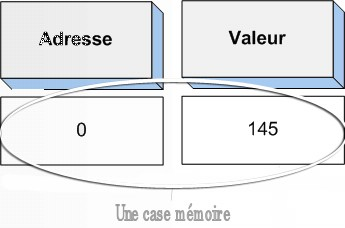
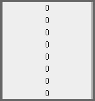
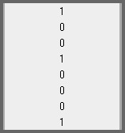

Ce tutoriel n'est que purement théorique, mais vous allez voir que c'est un sujet vraiment intéressant lorsqu'on programme.
Tu veux en venir où au juste ?
Nous allons voir comment votre ordinateur stocke et gère les variables à l'intérieur de la mémoire vive. Pourquoi ? Parce qu'un programmeur qui sait ce qu'il fait en vaut deux ! Pour mes exemples, j'utiliserai le C / C++ mais ce qui va suivre est valable quel que soit le langage dans lequel vous programmez...
Attention, pour comprendre ce qui va suivre, vous devez impérativement avoir lu et compris les cours de M@teo sur la mémoire (avec les schémas...). Bon, pour ceux qui auraient des trous de mémoire (ho ho, je ne l'ai même pas fait exprès :p !), je vais faire quelques petits rappels afin que vous soyez tous au point... D'abord, je vous rappelle qu'il existe différents types de mémoire sur un ordinateur classique (dans 99 % des cas quoi).
1. Les registres : une mémoire ultrarapide située directement dans le processeur. 2. La mémoire cache : elle fait le lien entre les registres et la mémoire vive. 3. La mémoire vive : c'est la mémoire avec laquelle nous allons travailler le plus souvent. 4. Le disque dur : que vous connaissez sûrement, c'est là qu'on enregistre les fichiers.
Nous, nous n'allons nous occuper uniquement de la mémoire vive. Mais ne vous inquiétez pas, il y a de quoi faire, et les autres mémoires fonctionnent toutes sur le même principe.
Pour voir comment fonctionne la mémoire vive (RAM), reprenons les petits schémas de M@teo :
Vous voyez donc que la RAM se découpe en deux parties :
- il y a les adresses : une adresse est un nombre qui permet à l'ordinateur de se repérer dans la mémoire vive. On commence à l'adresse 0 (au tout début de la mémoire) et on finit à l'adresse 3 448 765 900 126 et des poussières... Le nombre d'adresses dépend de la taille de votre RAM ; - à chaque adresse, on peut stocker une valeur (un nombre) : votre ordinateur stocke dans la mémoire vive ces nombres pour pouvoir s'en souvenir par la suite. On ne peut stocker qu'un nombre par adresse !
Moi, je vais employer le mot « case mémoire » pour désigner ET l'adresse mémoire ET la valeur correspondant à cette adresse. Un exemple : la première case mémoire ayant pour adresse 0 contient la valeur...145.

La taille de votre mémoire vive dépend donc du nombre de cases mémoire qu'elle contient. Évidemment, plus il y aura de cases mémoire plus votre mémoire pourra stocker de valeurs, de nombres (donc plus elle sera volumineuse ;) ). À noter qu'une case mémoire peut aussi être désignée par le mot « byte » (« octet » en français).
Ainsi, vous voyez comment la RAM peut stocker que des nombres.
Bon, pour les nombres, OK, mais pour les caractères, comment ça se passe ?
Mettez-vous bien ça dans le crâne : pour votre ordinateur, une lettre c'est un nombre ! En effet, il existe des codages qui ont pour fonction d'associer un numéro à chaque lettre. Le premier codage est l'ASCII (American Standard Code for Information Interchange). Ce codage étant très incomplet (du fait qu'il ne reprenait que les caractères de base comme l'alphabet de A à Z et de a à z, les nombre de 0 à 9 ainsi que les caractères comme les parenthèses, virgules...), un autre codage, l'ISO_8859-1 a été mis au point. Ce dernier reprend le codage ASCII en ajoutant des caractères spéciaux (é, à, è, î, ï, ù...). Enfin, je citerais encore, l'UTF-8 qui rajoute encore d'autres caractères spéciaux, ou encore l'Unicode... Bon, il existe bien évidemment d'autres codages mais je ne vais pas tous les citer, car on s'éloigne de notre sujet... D'ailleurs, ce n'est pas la peine de les retenir, retenez juste que l'on associe un numéro à chaque lettre à l'aide de codages spécifiques, ça sera largement suffisant !
Voilà pour ces quelques rappels, j'espère que tout cela est clair pour vous, car la suite découle directement de ces principes de base. ;)
Bon, maintenant que nous avons le principe de base de la mémoire RAM d'un ordinateur, nous allons voir ça plus en détail... Vous vous souvenez des fameuses cases mémoire (bytes) dont je vous avais parlées. :-° Eh bien, nous allons « zoomer » dessus. :magicien:
Une case mémoire, sur un ordinateur correspond (dans 99 % des cas) à un octet.
Un octet... :euh:
Le mot octet signifie huit (comme octobre ^^ ). Oui, mais huit quoi ? Eh bien huit bits ! Oulah un nouveau mot ! Ne vous affolez pas ! Vous allez voir, c'est très simple ! Le mot bit vient de l'anglais binairy digit. Un bit est une « entité », un « chiffre » pouvant valoir 0 (le bit est négatif) ou 1 (le bit est positif). Bien, retournons à nos octets, ils contiennent huit bits, c'est-à-dire une séquence de 8 chiffres compris entre 0 et 1 ! Je crois qu'un petit schéma s'impose. Voici à quoi ressemble une case mémoire (qui contient huit bits) :

Comme vous le voyez, chaque case mémoire contient un octet c'est-à-dire huit bits, trop facile non ? :p
Mais, dans ce cas, l'ordinateur ne peut stocker que des 0 et des 1, pas d'autres chiffres ! :o
Exact, l'ordinateur n'utilise que des zéros et des uns, c'est ce qu'on appelle la base binaire. Il n'y a pas « d'autres nombres ». Bon, je crois que tout ceci mérite plus amples explications... Nous, nous utilisons le système décimal, basé sur dix chiffres, de 0 à 9. Eh bien l'ordinateur utilise un système binaire, basé sur deux chiffres, de 0 à 1. Pour pouvoir stocker, par exemple le nombre (décimal) 145, l'ordinateur le traduit en binaire, ce qui donne : 10010001. Dites-vous bien que 145 en décimal c'est EXACTEMENT la même chose que d'écrire 10010001 en binaire ! Ainsi, avec ses 0 et ses 1, l'ordinateur peut stocker tous les nombres qu'il veut (enfin que l'ON veut) ! Reprenons notre petit schéma :

Voici comment serait stocké le nombre 145 dans la mémoire RAM de votre ordinateur.
Et que vaudrait le nombre binaire 11111111 en décimal ? À vos calculatrices... Réponse : 255. Donc, une série de huit 1 à la suite donne 255 en décimal. Je vais vous demander de reprendre vos calculatrices et de taper 2^8. Réponse : 256. Et 256 - 1 : 255 (sans calculette ça :p ) ! Eh bien, figurez-vous que ce n'est pas un hasard. Nous découvrons là qu'avec n bits, on peut stocker 2^n nombres compris entre 0 et 2^n - 1.
Comment fais-tu ça ? :o
C'est très simple ! Avec deux chiffres compris entre 0 et 1, je peux obtenir 2^2 soit 4 combinaisons différentes :
00 -> 0 01 -> 1 10 -> 2 11 -> 3
Sur le même principe, avec 8 chiffres compris entre 0 et 1, je peux obtenir 2^8 soit 256 combinaisons différentes ! Ces « combinaisons » sont aussi appelées états. D'ailleurs, si vous voulez tester tous ces états en détail, rendez-vous sur ce lien, vous pourrez d'ailleurs y voir l'algorithme de base permettant la conversion binaire > décimal, en consultant la source de la page (comme il s'agit d'une page Web, l'algorithme est en JavaScript, mais le principe reste le même pour le C...).
J'attire votre attention sur le fait que mes schémas ne montrent que la valeur de la variable. J'ai donc volontairement laissé l'adresse des variables de côté pour ne pas vous embrouiller avec tous ces nombres mais rassurez-vous, chaque variable a effectivement une adresse.
Dans la partie précédente, nous avons vu comment, à partir d'un octet, nous pouvions obtenir 256 chiffres différents. Mais en général, nous ne nous limitons pas au nombre 255 (l'équivalent d'un unsigned char en C). Alors, comment faire pour stocker des nombres plus grands ? La réponse, je pense que vous l'aurez devinée, est d'assembler les bytes pour former de plus grands nombres. Alors la question qui se pose maintenant, c'est comment « assembler », « réunir » plusieurs bytes ? Rien de plus simple, il suffit que ces bytes soient les uns à la suite des autres, l'ordinateur n'aura plus qu'à lire le nombre produit d'un seul tenant :
Voici par exemple le nombre (décimal) 37120, tel qu'il serait stocké dans la mémoire RAM de votre ordinateur... Vous constaterez que les bytes ainsi réunis doivent impérativement se suivre, puis on lit le nombre de haut en bas, comme suit : 1001000100000000. Vous pouvez, sur le même modèle faire suivre 2 (unsigned short, nombre compris entre 0 et 2^(8*2)), 4 bytes (unsigned long, compris entre 0 et 2^(8*4))... Voici un tableau, présentant les principaux types d'entiers en C / C++ avec le nombre de bytes nécessaire, pour un système travaillant avec des regroupements de 8 bits, donc avec des octets, en règle générale :
bool > 1 octet > true ou false ; unsigned char > 1 octet > de 0 à 255 ; unsigned wchar_t > 2 octets > de 0 à 65 535 ; unsigned short > 2 octets > de 0 à 65 535 ; unsigned int > 4 octets > de 0 à 4 294 967 295 ; unsigned long > 4 octets > de 0 à 4 294 967 295.
Comment sais-tu ça ?
Rien de plus simple, il existe une fonction en C permettant de retourner la taille occupée par une variable, il s'agit de la fonction sizeof(variable). Ainsi, vous pouvez vous-mêmes tester la taille occupée par chacun des types des variables en C / C++. ;) D'ailleurs, la taille des variables pouvant changer (surtout pour les int) selon l'ordinateur et / ou le compilateur que vous utilisez, je vous invite à vérifier par vous-mêmes la taille occupée par chaque type, à l'aide de la fonction sizeof().
OK pour les valeurs mais, une variable possède une adresse non...
Bien sûr, jusqu'à maintenant, j'ai laissé les adresses mémoire de côté pour ne pas trop vous embrouiller, mais cette adresse existe bien, elle permet d'ailleurs à l'ordinateur où chercher ses variables lorsqu'il en a besoin. C'est d'ailleurs pour cela qu'un byte ne peut pas être « cassé » en plusieurs bytes ; en effet, il ne peut pas y avoir plusieurs chiffres à la même adresse !
Jusqu'à maintenant, nous n'avons vu le fonctionnement de la RAM qu'avec des nombres entiers et positifs (non signés). Mais un ordinateur sait aussi stocker et gérer des nombres négatifs. Mais comment fait-il ? Eh bien l'ordinateur utilise tout simplement une ruse, une sorte de moyen mnémotechnique pour stocker ce genre de nombres. Mais d'abord, comment sait-il qu'un nombre est relatif ? C'est très simple, on utilise les préfixes signed (facultatif) ou unsigned. Donc, l'ordinateur sait qu'il a affaire à un relatif (positif ou négatif) grâce à la déclaration des variables. Mais cela ne nous dit pas comment il sait qu'un nombre possède une virgule à tel endroit ou que tel autre nombre est négatif.
Avant de rentrer dans des explications barbares, j'aimerais que vous soyez tous au point sur ce qu'est le poids des bits. Rassurez-vous, ça n'a rien d'extrêmement compliqué. En fait, le bit de poids fort est le bit situé à l'extrême gauche du nombre binaire, et le bit de poids faible est le bit le plus à droite (toute connotation politique est totalement fortuite :p ). D'une manière générale, le poids du bit correspond à sa place dans le nombre. Ainsi le bit de poids 0 est le premier bit, celui de poids 1 est le second et ainsi de suite... Bon, un exemple pour être au point : bit de poids fort ->10010101<- bit de poids faible (de poids 0). Le bit de poids 1 vaut 0, celui de poids 2 vaut 1...
Bien, maintenant que ce principe est acquis, voyons comment sont stockés :
- des nombres signés positions ou nuls : Ces nombres seront stockés comme un entier positif à la seule différence que le bit de poids fort doit valoir 0. Ainsi, d'une manière générale le plus grand entier relatif positif codé sur n bits sera 2^(n - 1) -1.
- des nombres signés négatifs : pour ces nombres-là, on se sert de la technique du complément à deux, dont voici le principe : 1. on prend l'opposé du nombre à stocker (rappel : l'opposé d'un nombre négatif est un nombre positif) ; 2. on le représente en binaire sur n - 1 bits : donc sur 7 bits s'il s'agit d'un octet (comme on le fait pour les nombres signés positifs ou nuls) ; 3. on complémente chaque bit (on inverse tous les 0 et les 1) ; 4. on ajoute 1.
Un exemple : prenons le nombre -9, et voyons comment il serait stocké sur un octet. 1. On prend l'opposé de -9, c'est-à-dire 9. 9 en binaire s'écrit : 1001. 2. On le représente sur n - 1 bits : (0)0001001. 3. On complémente : (1)1110110. 4. On rajoute 1 : (1)1110111.
Et voilà ! Vous remarquerez que je mets le bit de poids fort entre parenthèses, pour indiquer qu'il ne fait pas vraiment partie du nombre, il sert en fait à indiquer le signe : 0 si le nombre est positif ou nul, 1 s'il est négatif. Pour stocker des nombres plus grands (ou plus petits), les nombres peuvent être stockés sur plusieurs bytes, comme vu dans la partie précédente.
Nous avons vu, dans la partie précédente, comment notre ordinateur pouvait stocker des nombres relatifs (c'est-à-dire pouvant être positifs ou négatifs). Mais nous ne nous arrêterons pas en si bon chemin ! Voyons maintenant quelle méthode utiliser pour stocker des nombres réels (à virgule). Comme pour les nombres relatifs, l'ordinateur se sert des déclarations de variables, pour différencier un nombre réel d'un nombre entier ; en effet, nous utilisons des types de variables différents pour chaque type de nombre que nous souhaitons utiliser (réel relatif, réel non signé, entier...).
Mais avant toutes choses, qu'est-ce qu'un nombre réel ? Il s'agit d'un nombre possédant une virgule et pouvant s'écrire, sous la forme : X.XXX...*10^n où X est bien entendu compris entre 0 et 9 pour le système décimal, et sous la forme : 1.XXX...*2^n où X est compris entre 0 et 1 pour le système binaire.
Et sans plus attendre, voici la méthode utilisée pour représenter des nombres réels sur 32 bits (float) : seeeeeeeemmmmmmmmmmmmmmmmmmmmmm.
Comme vous le découvrez, cette méthode se propose de coder le nombre sur 32 bits en définissant trois composantes : - le signe s représenté par un seul bit, le bit de poids fort ; - l'exposant e codé sur les 8 bits consécutifs au signe ; - la mantisse m (les bits situés après la virgule) sur les 23 bits restants.
Mais ce n'est pas tout ! En effet, certaines conditions sont à respecter pour les exposants : - l'exposant 00000000 est interdit (en effet, n^0 vaudra toujours 1) ; - l'exposant 11111111 est interdit. En effet, on s'en sert pour signaler des erreurs, on appelle alors cette configuration de nombre NaN, ce qui signifie Not a Number ; - il faut rajouter 127 (01111111) à l'exposant pour une conversion de décimal vers un nombre réel binaire.
Un exemple pour que ça soit plus clair, prenons le nombre 525.5 :
525.5 est positif donc le premier bit sera 0 ;
sa représentation en binaire est la suivante : 1000001101.1. :-°
Ne faites pas cette tête, c'est pourtant très simple, il suffit de représenter le nombre comme une somme : valeur du bit * 2^(poids du bit) : 525.5 = 1000001101.1 = 1*2^9 + 0*2^8 + 0*2^7 + 0*2^6 + 0*2^5 + 0*2^4 + 1*2^3 + 1*2^2 + 0*2^1 + 1*2^0 + (.)1* 2^-1 = 512 + 0 + 0 + 0 + 0 + 0 + 8 + 4 + 0 + 1 + 0.5 = 525.5 > on retombe donc bien sur nos pieds !
- En normalisant, on trouve : 1.0000011011*2^9. - On ajoute 127 à l'exposant qui vaut 9 ce qui donne 136, soit en binaire : 10001000. - La mantisse est composée de la partie décimale de 525.5 en base binaire, c'est-à-dire 0000011011. - Comme la mantisse doit occuper 23 bits, il est nécessaire d'ajouter des zéros pour la compléter : 00000110110000000000000. Pourquoi je rajoute des zéros à droite et non pas à gauche ? Parce que 1.0000011011 vaut 1.00000110110000000000000 ! - Et pour finir, je mets le signe, l'exposant et la mantisse à la suite. Ainsi, voici le nombre 525.5 tel qu'il serait stocké dans la mémoire RAM de votre ordinateur :
01000100000000110110000000000000 seeeeeeeemmmmmmmmmmmmmmmmmmmmmm. Bien entendu, on procède de la même manière pour les nombres négatifs (cette fois-ci, seul le signe change).
Mais voilà, cette méthode n'est vraie que pour une variable de 32 bits (ce qui correspond à un float) !
Quoi ? Parce qu'en plus il y a une méthode pour chaque type ! :colere:
Mais non du calme ! Rassurez-vous, la méthode est EXACTEMENT la même pour tous les types, tout ce qui change, c'est le nombre de bits représentant l'exposant et le signe :
float > 4 octets > 1s 8e 23m > 6 chiffres après la virgule ; double > 8 octets > 1s 11e 52m > 15 chiffres après la virgule ; long double > 10 octets > 1s 15e 64m > 17 chiffres après la virgule (en règle générale).
Vous comprenez donc pourquoi tous les types de variables pouvant contenir des nombres réels occupent tous au moins 4 octets (soit 32 bits).
Voilà j'espère que ça vous a plu, vous savez maintenant ce que vous faites concrètement, lorsque vous stockez ou que vous utilisez une variable. ;)